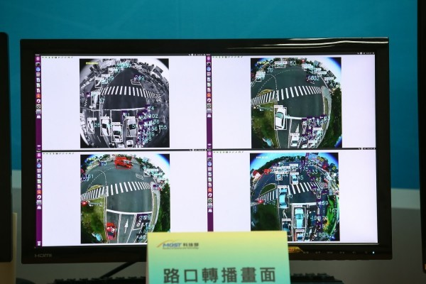
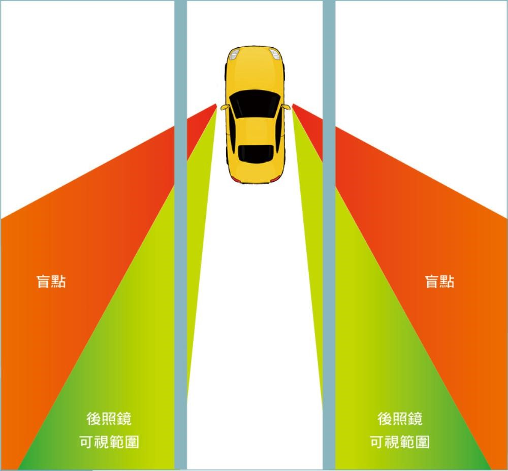
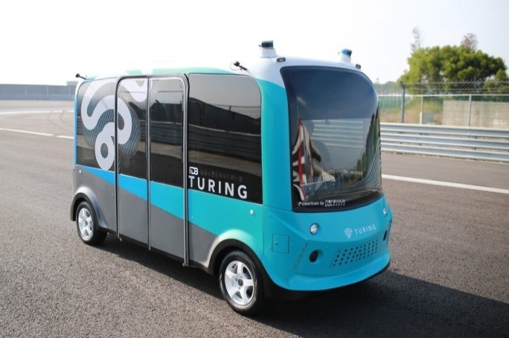

住 <<
Previous Next >> 健康
行
AI與交通的結合
尖峰時間塞車，是都會區不可承受之重，而這樣的問題其實可以用AI來解決。由科技部補助的台大人工智慧中心與義隆電子提出「城市車流解決方案」，監控車流並彈性調整交通號誌，改善了62%的堵車狀況，不僅降低交通事故，還能節省10 分鐘的通勤時間。
義隆電子旗下一碩科技提供硬體，搭配台大人工智慧中心的軟體研發所共同推出的解決方案，是將360度魚眼相機設置於路口，將所搜集的數據匯入雲端分析，運算最合適的紅綠燈秒數來調節車流。
而業界出題，學界解題也讓這次的合作，有了不錯的成績。以竹北到竹科的實際應用為例，原本該路段行車時間為16分鐘，透過「城市車流解決方案」方案後減少至6分鐘，節省10 分鐘的通勤時間，改善幅度達62％，而交通事故從平均每個月9.5件降至8件。而該方案除了將在台南、高雄、台中、台北、桃園、嘉義等城市落地，目前也已進軍菲律賓宿霧，泰國交通部也規劃引進。
設置於路口的「360度魚眼鏡頭」，將收集的車輛數據回傳雲端分析，並彈性調整交通號誌，紓解車流。現有的交通監測工具中，攝影機多半無法做到對車輛自動且精準的計算，而路口若要做到全景監測，得架上多部攝影機，多畫面的整合將會是個問題。
而一碩科技所開發出的魚眼攝影機及校正晶片，搭載AI影像辨識技術，將每個路口的轉向車流統整之後，建立出車流的真實模型，解決難以監測的痛點。另外360度全景魚眼搭載同集團義晶科技所開發的360度全景魚眼修正晶片，將360度的影片解碼，降低對電腦運能算力的需求，也因此監控單位的電腦，能負荷數百個鏡頭回傳的畫面，現在一碩已在新竹400個路口裝設魚眼鏡頭。

AI與交通工具的結合
卷積類神經網路
在深度學習的架構中，卷積類神經網路（convolutional neural network, CNN）是相當受歡迎的一個架構。1989年由LeCun等人提出的CNN架構，在手寫辨識分類或人臉辨識方面都有不錯的準確度。近年來，隨著CPU效能的提升與繪圖晶片平行化技術的發展，讓具高複雜度、費時的深度學習演算法在即時應用上露出曙光，透過繪圖晶片可讓訓練模組與測試的時間大幅縮短。伴隨著得以取得多樣的影像資料庫，CNN 可觸及更多在照片與影片上的應用。例如近來接續發表的AlexNet、ZF-Net、VGG Net、GoogLeNet等，在精確度與效能上都有所改善，甚至在有些情況中可以超越人眼可辨識的範圍。
在影像上的技術發展
深度學習在影像應用上正蓬勃發展，從物件分類、物件偵測、物件追蹤、行為分析至反應決策，無一不朝向提高準確度和效能的方向發展。以下介紹近年來在處理物件分類與物件辨識方向熱門的CNN網路架構與改進。
物件分類
物件分類是分析一張照片中包含的物件種類，主要是先使用convolutional layer進行特徵擷取，再經由fully- connected layer合併特徵進行判斷。而在深度學習網路優劣評比中，ILSVRC （ImageNet Large Scale Visual RecognitionCompetition）是一種標竿排名比賽，方便研究者評估與比較物件偵測以及影像分類演算法。以下是幾個著名影像物件分類的網路架構：
LeNet─這是首先成功的CNN架構，由LeCun在1990年提出，見長於辨識數字和英文字母。
AlexNet─第一個讓CNN網路架構開始在電腦視覺中蓬勃發展的網路，由Alex Krizhevsky、Ilya Sutskever和Geoff Hinton提出，並在2012年的ILSVRC比賽中比第二名取得了大幅度的領先（Top 5 error 16％，第二名是26％）。AlexNet的網路架構類似於LeNet，但更深、更大，並且開始使用多個層疊的convolutional layer，然後再連接pooling layer，有別於以往一層convolutional layer都會馬上連接一層pooling layer的架構。
ZF-Net─由Matthew Zeiler和Rob Fergus所提出，並在2013年的ILSVRC取得優勝。他們提出了一個把CNN網路中間的特徵層取出並視覺化的方法，便於分析CNN架構不足的地方並加以改進。ZF-Net便是基於AlexNet的優化，活化AlexNet中無用的特徵，以得到更好的特徵擷取和辨識效果。
VGGNet─由Karen Simonyan和Andrew Zisserman提出，最主要的貢獻是證明了CNN網路的深度對準確度的影響，愈深的網路提供愈好的準確度。但VGGNet的網路架構需要更高的計算複雜度，以及更高的記憶體需求。
GoogLeNet─由Google提出，在2014年的ILSVRC中取得優勝。GoogLeNet提出了inception module，可以同時結合不同level的特徵，並可串連不同scale下的特徵提取值，讓網路可以更深，同時減少參數（例如GoogLeNet使用400萬個參數，AlexNet使用了6,000萬個參數，而VGGNet更需要14,000萬個參數），並擁有更好的辨識效果。
ResNet—由Kaiming He等人提出，在2015年的ILSVRC中得到優勝。ResNet提出的架構可讓特徵值有捷徑跳至後幾層，讓CNN網路得以更深，並大量使用batch normalization，是目前最佳技術的CNN分類網路架構，但它的計算複雜度也最高。
物件偵測
相較於物件分類，物件偵測的挑戰更加艱難，它是在一張影像中，需要同時定位物件的座標，再做出分類。現有技術已從最早期開始的遍數法，也就是把影像中所有可能性都使用CNN網路判斷，到後來提出在辨識上能更有效率的物件找尋方式。在評估物件偵測演算法優劣上，一般使用PASCAL VOC （visual object classes）這個開源的標準資料庫進行測試。以下介紹目前著名的物件偵測技術。
Sliding windows─早期較原始的找尋目標方式，先把一張圖片由小到大的視窗，整張影像全部掃過一遍，並擷取掃過的影像，餵進CNN網路分類。這個方法簡單，但計算量非常大，不適合即時應用。
Region proposal CNN network─這個技術是先對影像進行區域提取，透過演算法把影像切分為可能含有物件的區域，再擷取這些區域，提供給物件分類的CNN網路判別。著名的架構有RCNN、Fast-RCNN、Faster-RCNN等。RCNN使用selective search演算法進行區域提取，經過演算後，可以把一張影像取出許多個有可能的區域。但這演算法過於複雜，並且每個區域中進行CNN特徵提取時會重複計算，進而導致效能瓶頸。
Fast-RCNN─改良自RCNN，加速了RoI pooling layer，使得RoI pooling layer可以把不同大小的輸入mapping到固定大小的層，並且改動RCNN的流程，先提取可能區域，然後做特徵提取，再從提取完成的特徵圖進行分類。這技術可以避免RCNN中特徵提取重複計算的問題，在保證精確度下提升運算速度。
Faster-RCNN─Faster-RCNN更進一步使用region proposal network（RPN）取代原先的selective search，把可能區域的提取方式內嵌到CNN網路中，提供訓練和測試一個end-to-end的網路架構。RPN layer也改善了原先selective search只使用CPU運算的問題，把可能區域提取透過繪圖晶片加速。
在regional proposal CNN network方面，目前常見的著名網路架構有ZF+Faster-RCNN、VGG16+Faster-RCNN、R-ResNet-101+Faster-RCNN、PVANet等，前兩個是使用ZFNet和VGGNet再加上Faster-RCNN架構產生的物件偵測網路。
ResNet-101+Faster-RCNN是目前準確度最高的架構，準確率達到83.8％，但整體運算量非常大。PVANet則多導入了C. ReLU module 以及改進了inception module，透過分析特徵層的特性，讓計算複雜度下降的同時擁有更好的精準度。在PASCAL VOC2012 中有82.5％的精準度，但運算量只有ResNet-101+Faster-RCNN 的約十分之一。
統一偵測─ 不同於region proposal CNN network，統一偵測（unified detection）對於物件偵測的方式不先提出可能區域再進行分類，而是直接把可能區域提取的方式轉為回歸問題。它透過預先設定好的幾個bounding box，利用CNN網路進行bounding box位置回歸以及可信度判斷，同時進行分類。這方法可大幅提升物件偵測的速度，但對於小的物件以及準確度仍有待改進。以下介紹幾個著名的unified detection物件偵測網路：
You only look once（YOLO）─ 如其名，人眼在分別物體時並非先抓取位置再進行判斷，而是看到物體的同時辨識物件。YOLO提出了unified detection的物件偵測方式，透過預先設定好的bounding box，再透過縮放平移去貼近到物件邊緣同時判斷，因而大幅提升速度。但它的準確度尤其是對於較小的物件，表現較差。
Single shot multibox detector─改良自YOLO網路架構，它把網路分為兩個結構：feature extraction和auxiliary。Feature extraction的部分與一般網路類似，用於特徵提取，auxiliary則是把提取出的特徵再進一步降低維度，讓最後的fully-connected layer同時結合不同維度的特徵，進行bounding box回歸和物件分類。相較於YOLO只使用單一維度的特徵進行判斷，這種方法可以有更佳的準確度，在PASCAL VOC有82.2％的平均準確度。
基於物件偵測的自駕車應用
深度學習演算法擁有良好的精準度和穩定性，但伴隨的是較高的計算複雜度。然而這個演算法可以大量地平行化，因此適合利用繪圖晶片加速演算。訓練的策略也是機器學習很重要的一環，且要能夠在嵌入式系統上實現，因此它的網路架構必須設法精簡。自駕車在路上容易遇到的物件有車輛、機車騎士、行人等，鎖定這幾類物件偵測可以降低深度學習的複雜度，使得在同樣的精準度下達到更快的偵測速度。
Pascal VOC2007 datasets中包含20類物件，如飛機、腳踏車、鳥、船、貓、狗等，自駕車所需的目標只需要偵測汽車、行人與機車騎士。由於機車騎士具備行人特徵，可由行人樣本來偵測，因此只需要從Pascal VOC2007 datasets的20類樣本中取其中兩類，汽車與行人，當作自駕車系統的一部分訓練樣本，就可訓練出自駕車所需要的模型。
距離偵測與前車防撞警示
車距可以利用鏡頭水平拍攝後，藉由鏡頭的高度與焦距推算。在前車防撞警示方面，可利用車前方的相機擷取影像後，透過深度學習物件偵測演算法偵測物件。再由前述車距估算的方法對物件位置分類以及距離估算，並根據自駕車與前方車輛的距離調整安全距離，以避免前方車輛突然緊急煞車，導致自駕車煞車不及而追撞前方車輛。

盲區危險警示
駕駛人開車時，變換車道或轉向都應注意左右方車輛。而一般車輛在後照鏡的視覺上都有盲點，唯有透過轉頭才能注意到盲點區域的車輛。但在駕駛時轉頭又容易偏離車道或無法注意前方車況，同樣地自駕車也需考慮這問題。解決方案是藉由AI深度學習偵測物件，準確地辨識出左右後方區域中的物件，再整合所有資訊，透過鏡頭預先設定的基準線，可以判斷出偵測到的物件是否在需要警示的位置，並以相較於自身車輛的距離而警示。
應用於路面標線標字偵測
由於許多事故都是因汽車駕駛未遵循路上的標線或標字行駛而造成，因此當自駕車行駛在路上時須偵測並理解標線及標字。為使深度學習演算法訓練與偵測更加穩健，通常把路面由俯視轉為鳥瞰角度，建構可應用於馬路標線和標字偵測的模型，讓自駕車遵行路上的標線標字內容，而能安全地行駛在道路上。

資訊來源
https://scitechvista.nat.gov.tw/c/sTkg.htm
https://www.bnext.com.tw/article/51602/ai-smart-city-traffic-fisheye
https://fc.bnext.com.tw/turing-ai-bus/
住 <<
Previous Next >> 健康